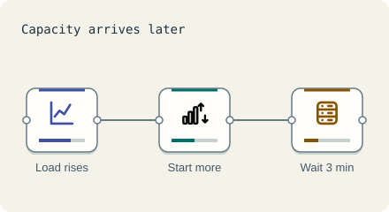

Scale the front · 3 minutes
Adding servers, and why it is late
Autoscaling adds servers when busy, but new servers take minutes to start.
Open this lesson
More servers on demand
Evening traffic is much heavier than the dead of night. Instead of paying for peak servers all day, autoscaling adds servers when they are busy and removes them when quiet.
Why it is always a little late
Reacting to a spike leaves a gap before new capacity is ready. Compare that gap with servers prepared in advance.
Try the idea
Evening rush and a viral spike are coming. Turn on Autoscale for the servers.
Key numbers
- New server ready in
- ≈ 3 minutes. approx.
- Target busy level
- ≈ 60 percent. leaves room while servers start
- Night versus peak traffic
- ≈ 1 to 5. consumer apps, approx.
Check your reasoning
Think through these questions before opening the lesson. In the game you can test the idea and compare your reasoning.
- Why not run peak servers all day?
- Why can a spike still break an autoscaled system?
- A famous launch is at noon. Best move?
The key point
Autoscaling follows the crowd; for known surges, scale ahead of it.
Practise this idea
- Hard
Tax filing deadline
A national tax site lets 30 million people file online. Most wait until deadline day, and traffic climbs all evening to a final-hour rush. People upload forms, check what they owe and pay. A mistake in a payment or a leak of tax data is a national story.
- Medium
CI/CD build system
Every time a developer saves code to the shared repository, you build and test it. Thousands of developers do this all day, and release day brings a rush. Builds must start quickly, but idle build machines cost real money.